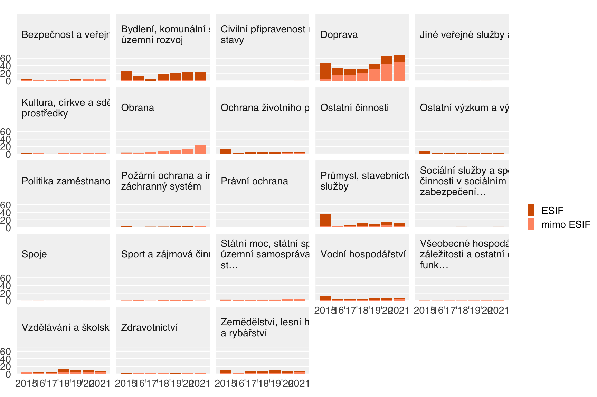
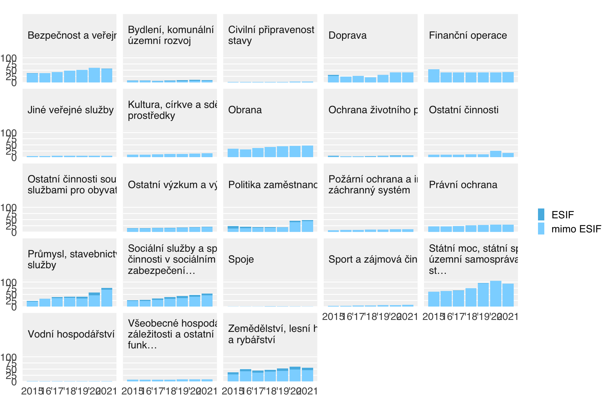
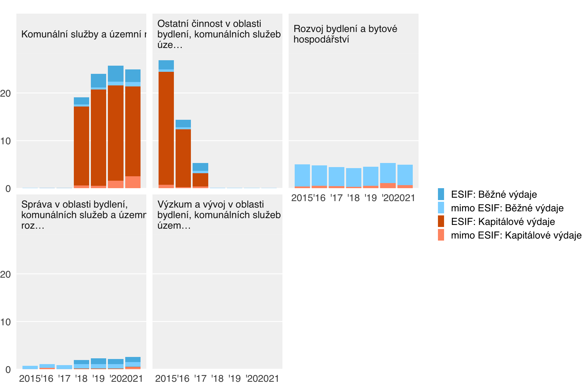
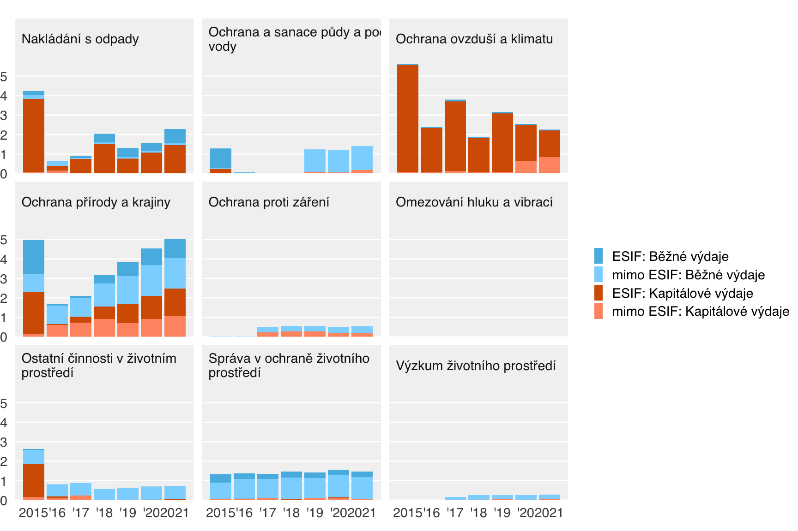
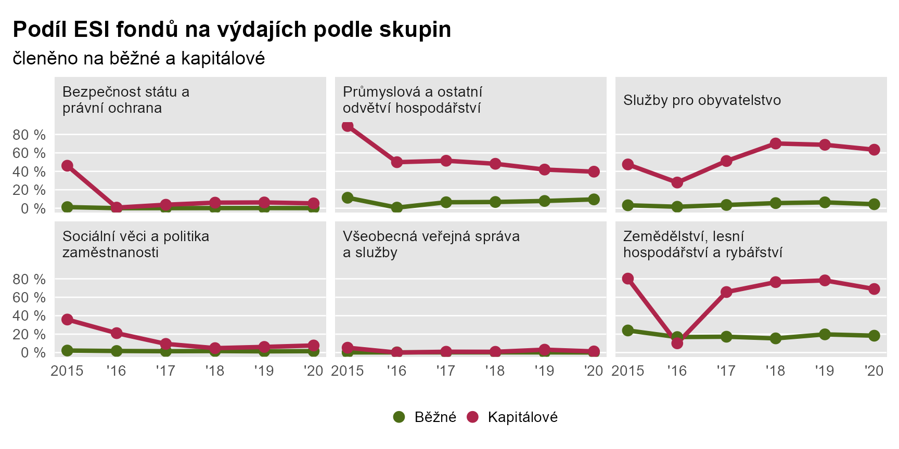
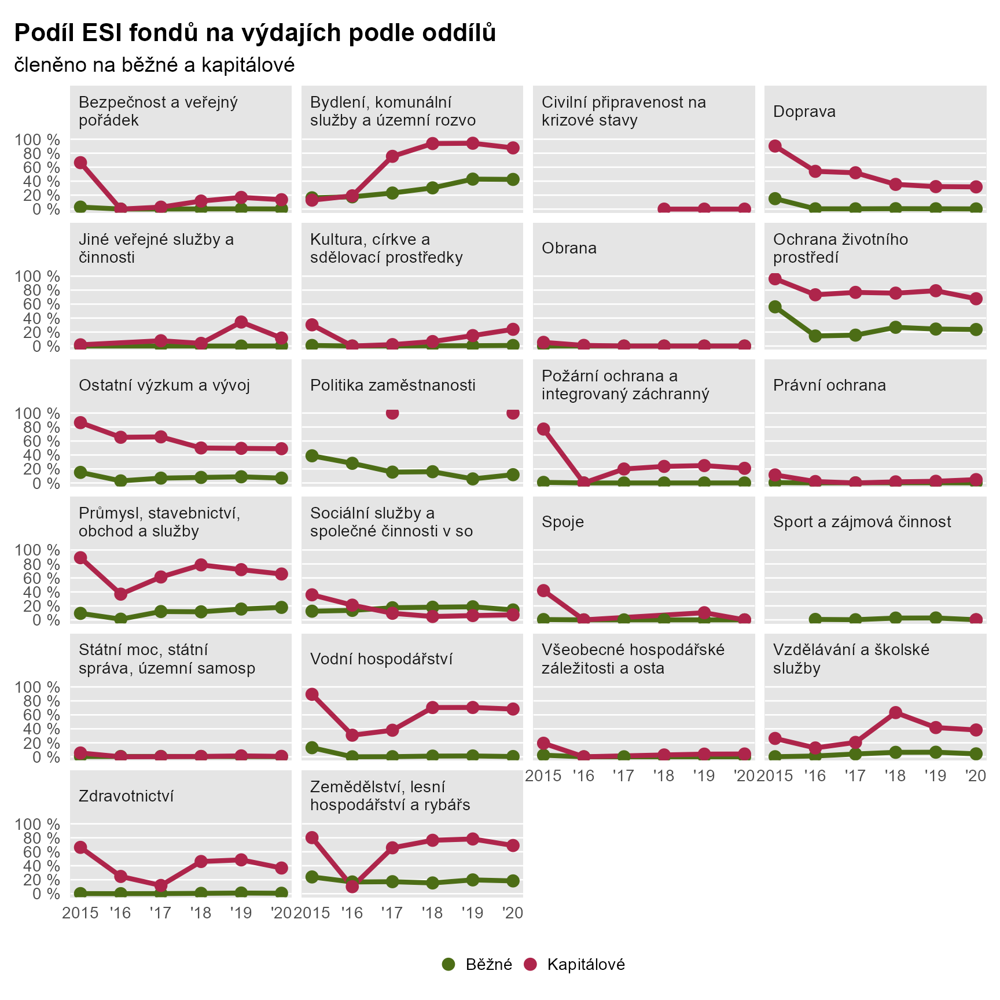
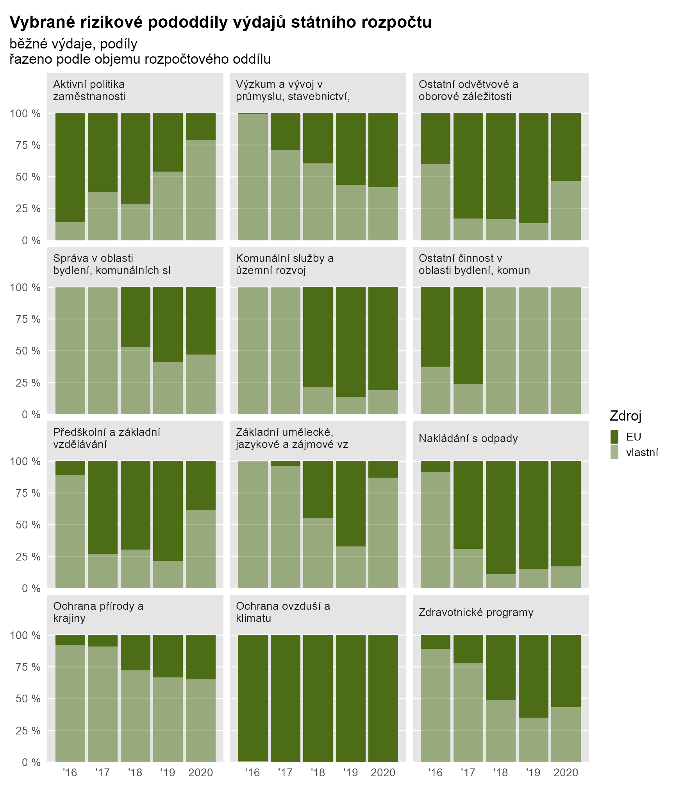
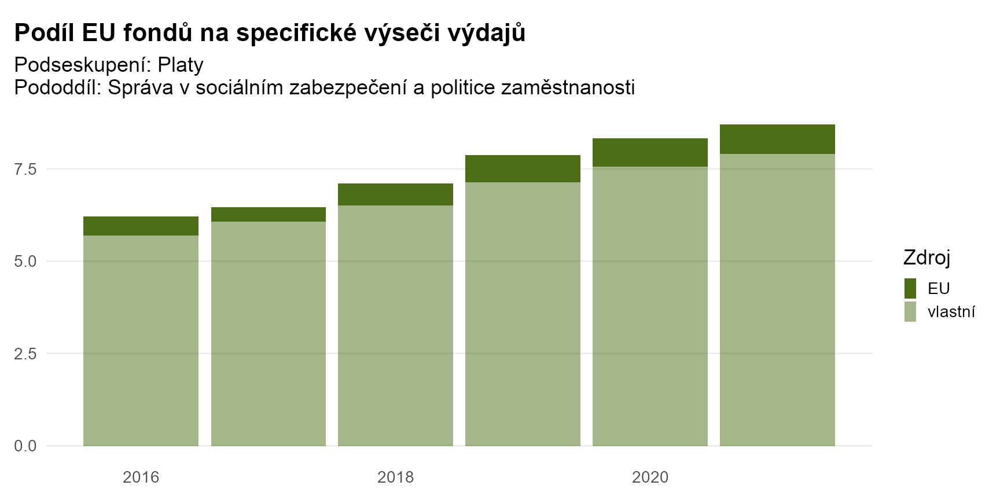

Využíváme data ze Státní poklady, konkrétně otevřené datové sady o plnění rozpočtů tzv. ústředně řízených organizacích, které dohromady odpovídají hranicím státního rozpočtu.
Státní pokladna ve veřejně dostupných datech sleduje čtyři typy organizací
Kromě příjmů a výdajů pak stát eviduje ještě účelové transfery (dotace) od státu k obcím.
Peníze do veřejného sektoru tečou třemi cestami:
Následně tečou dál formou transferů, tj. účelových a neúčelových přesunů, dotací atd., např. od státu nebo státním fondům obcím nebo státním příspěvkovým organizacím.
Peníze jednou přitečené do státního rozpočtu jsou tam vidět jako příjem a následně jako výdaj. Pokud peníze utrácí stát sám na svoje vlastní aktivity, výdaje vidíme rozčlěnený do detailu podle paragrafů a položek. Pokud stát poslal peníze dál, např. obcím, vidíme ho jako transfer a další detail vidíme až v datech od toho, kdo je na konci utratil, tj. např. obec. Proto např. ve státním rozpočtu nejde dobře sledovat výdaje na platy ve školství, protože ty jsou ve státním rozpočtu evidovány jako transfer obcím a nejsou v detailu sledovány.
U ESI fondů platí, že peníze přitečou vždy do státního rozpočtu (tzv. Národní fond) a následně je stát buď
Technické řešení tohoto problému - kdy výdaje jsou evidovány při předání mezi částmi veřejného sektoru i při konečném vydání - řeší konsolidace, pro kterou data státní pokladny také poskytují podklad.
Data státní pokladny fungují tak, že na každou utracenou korunu nalepí několik nálepek podle různých členění a výsledné datové sady tak poskytují velmi jemný rozpad výdají podle několika členění naráz. Každé členění má několik úrovní detailu, od cca 10 kategorií po několik set.
Této vícerozpěrnosti dat využíváme jednak pro identifikaci peněz z ESIF (zdrojové třídění), jednak pro detailnější analýzy (např. kapitálové výdaje na transfery soukromému sektoru v oblasi energetiky).
U zdrojového třídění dokážeme odlišit i období, tj. např. v roce 2015 lze odlišit OP D 2007-13 od OP D 2014-20.
Ze státní pokladny lze dovodit operační program, ztrácí se ale vazba na projekty a tím i na kategorie používané v monitoringu ESIF, např. oblasti intervencí.
| typ | roky | identifikace ESIF |
|---|---|---|
| státní rozpočet | 2015-2021 | Ano |
| státní příspěvkové organizace | 2010-2020 | ? |
| státní fondy | 2015-2021 | Ne |
| samosprávy a jimi zřizované organizace | 2010-2021 | Částečně |
Hlavní rozdíly jsou tři:
Ad 1: u SF nejsou z veřejných zdrojů data o zdrojích výdajů, pro rok 2017 vznikly velkým množstvím ruční kompilace interně na MF Ad 2: pro obce data o zdroji výdajů zřejmě nejsou přímo dostupná od roku 2015
Následky:
ad 1. Kategorie “ústředně řízení organizace” zahrnuje jiný okruh výdajů; po roce 2015 u části těchto výdajů neznáme rozdělení na ESIF a vlastní. Nicméně celkové součty výdajů pro “překryvový” rok (kde máme data z obou zdrojů) cca odpovídají. ad 2. O kategorii “místně řízených organizací” tj. samospráv máme ohledně podílu ESIF jen nepřímá data a jejich kvalita spolehlivost zatím není jasná. ad 3. V této studii na některých místech ukazujeme dva okruhy výdajů: jednak celý státní rozpočet, jednak výběr podle studie z roku 2017.